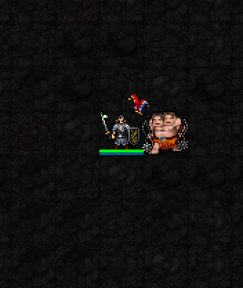
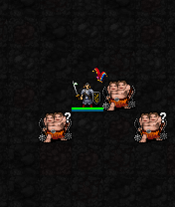
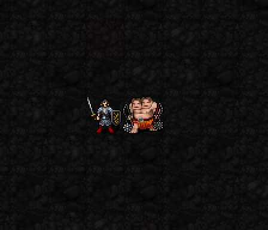
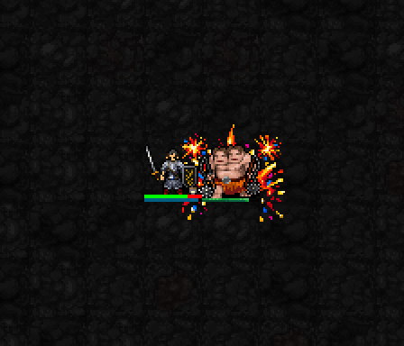
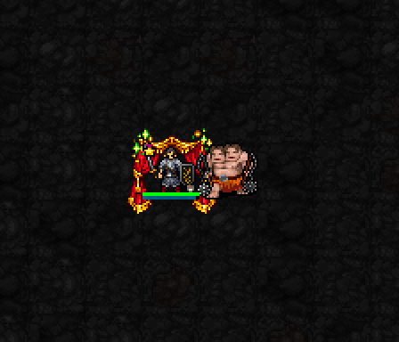
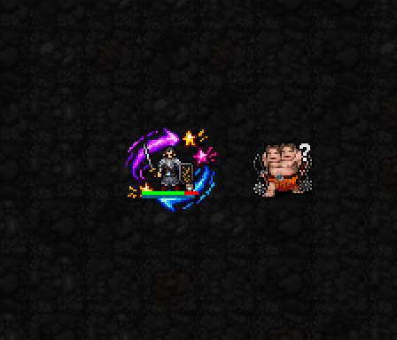

오늘의 공연 · 일점집중
강한 표적을 지정하고, 해당 표적에게 유효 피해를 3회 이상 준 뒤 처치하면 공연 성공.

뭇별 승인: 라미 1·3·5성 완료. 다음은 폴카의 현재 전용 모티프 초안을 검토합니다.
1성 공연 과제로 박수 획득 → 3성 곡예로 전투 운용 → 5성 선택형 대단원.
1성은 기존 별 문양을 제거하고 모자만 남긴 빨강·파랑·검정 광대 모자로 교체하고 실제 게임에서 다시 캡처했습니다. 순간 효과 두 프레임을 반복합니다. 1·3성 승인 완료. 5성 불꽃·커튼·소용돌이를 이전보다 약 15% 더 줄인 검토본입니다.
MP1 · 준비 0.5턴. 성공하면 박수 1~2(최대 6), 신앙 +1, 6턴 동안 명중 +3·일반 공격 피해 +10%. 영상은 시작 연출이며 과제 완수 과정은 포함하지 않습니다.
강한 표적을 지정하고, 해당 표적에게 유효 피해를 3회 이상 준 뒤 처치하면 공연 성공.

지정 표적에게 피해를 준 뒤 두 번 이상 자발적으로 이동하고, 표적을 처치하면 성공.

유효한 서로 다른 적 3명 이상에게 피해를 주고, 공연 중 적을 처치하면 성공.

MP3 · 신앙2 · 1턴 · 재사용 4턴. 실제 권능으로 인접 적을 넘어 반대편 바닥에 착지하는 전후 장면입니다. 도약 전 → 착지 고리 → 연출 종료 순서. 게임 이동은 즉시 처리되며 공중 중간 동작은 없습니다. 카메라 이동을 맞춰 몹 위치를 고정했습니다.
인접 적을 넘어 반대편 빈 바닥으로 도약. 붉은·금색 고리는 도약 시전의 순간 서커스 연출이며 지속 장판이 아닙니다. 3턴 안의 다음 공격 피해 +20%. 박수 1 추가 사용을 선택하면 착지 주변 적의 명중을 4턴 동안 5 낮춤.

MP6 · 신앙10 · 박수3~6 · 1턴 · 재사용16턴. 불꽃 피날레는 작은 불꽃 폭발과 색종이, 커튼콜은 열린 붉은 커튼과 회복 반짝임, 대혼란은 보라·파랑 회전 화살표로 구분했습니다. 아래 시연은 박수3을 미리 준비한 시험 장면입니다. 박수의 자연 획득 과정이나 모든 표적 결과를 보여주지는 않습니다.
지정한 지점 주변 2칸에 화염 피해. 피해량 2d(8+⌊기도술/3⌋)+4×소비 박수. 벽과 경로의 영향을 받음.

HP를 8+⌊기도술/2⌋+4×소비 박수 회복. 3+소비 박수 턴 동안 새로 적용되는 혼란·감속·공포·중독 지속시간 50%.

자신 주변 2칸의 적을 1칸 밀치고 혼란 판정. 정신 면역·명료화 대상에게 혼란은 적용되지 않음.

현재 전용 서커스 문양 초안입니다. 그림의 크기는 실제 피해 범위와 같다는 뜻이 아닙니다. 성공·실패·면역, 박수의 자연 수입, 공연 완주, 도약 궤적의 전체 연출은 이 영상으로 검증하지 않습니다. 라미 승인본과 전투 수치는 변경하지 않았습니다.